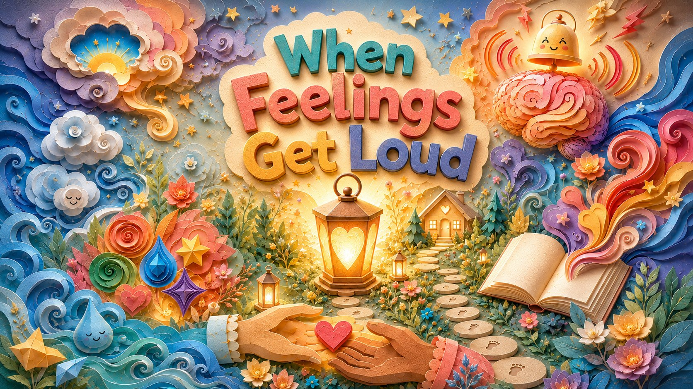

8 therapeutic songs for children · Skills for Children
A musical companion
When Feelings Get Loud is a complete album of eight original therapeutic songs for children, designed to be used at home, in the car, or in the therapy room. Each song targets a specific skill — from understanding the brain's alarm system to building a safety plan with trusted people.
The album maps onto the eight PRACTICE components of Trauma-Focused Cognitive Behavioral Therapy (TF-CBT), giving children, caregivers, and clinicians a musical companion for the full therapeutic arc.